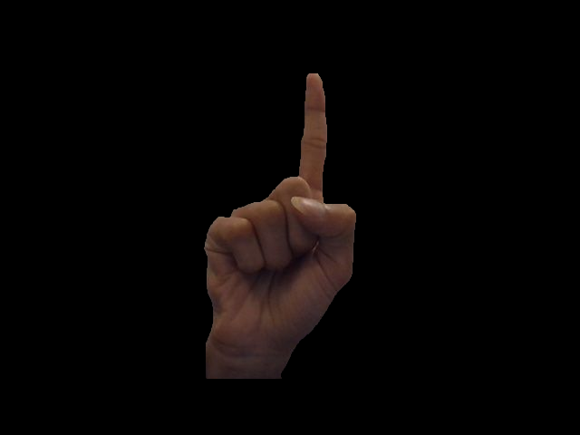

Problem Definition
The goal of this assignment is to implement algorithms that can recognise shapes and gestures made by the hand.
The program should take video frames of the hand as an input, analyze and process it to recognise the gesture that the hand is making.
Finally, we must visualize the output in a graphical display.
Parts of the assignment:
1. Implement algorithm to perform hand gesture recognition
2. Visualise the output in a graphical
3. Implement algorithm to recognize multiple hand gestures.
Method and Implementation
1. Skin Detection
Converted the input RGB frame to HSV and estimated HSV values of skin color to function as the benchmark for thresholding input frame according to skin color.
Obtained ellipsoid structuring kernel and applied morphological operations like erosion and dilation to it followed by Gaussian Blur. This gives us the skinmask
The skinmask will be used in future template matching operations to detect the hand shape in an input frame
In order to threshold the input video frames, and carry out precise segmentation, trackbars were implemented to get csv values according to the skin color.
2. Template Matching
Created segmented templates for different hand gestures.
Implemented Multiscale Multiple Template matching between gesture templates and the incoming video frames so that the template matching operation is invariant to the scale difference between the object in the template and the incoming frame.
The bounding boxes and the skinmask used to identify the hand and scaled according to the proportion of change in the size of the hand as it moves near and farther away from the camera.
Implemented gesture matching for the following gestures:
- Palm
- Thumbs Up
- Fist
- Pointing Finger
3. Finger counting
We wanted to design an algorithm where the number of fingers being held up can be calculated without have templates saved for each number.
For this we find contours of the hand in the frame. The method of finding contours selected is “CV_RETR_EXTERNAL”, which means it will just return the most external contour, ignoring eventual contours that are inside the most external region. We then plot the convex hull which is a line passing through a set of convex hull points (determined by te contours). We draw the convex hull for the largest contour shown in green in the graphical display
Now, we apply the convexityDefects function to get the defect points using the contours and the convex hull. The convex defects are points of gaps between the contour and the convex hull
The “convexityDefects” function returns a vector of tuples of four values. The first value is the initial point of the defect region. The second value is the ending point of the defect region. The third value is the “middle” point of the defect region that connects the initial point and the ending point. What only interests us in the initial point, that is the point where our fingertips are placed.
There are far more points than just our fingertips. We need to do a filtering for only the points of our interest. Conditions for defect point selection
- i) Consider the inner angle between the two lines of the defect region to be between a certain interval;
- ii) Consider the angle between the initial point and the center of the contour region to be between a certain interval;
- iii) Consider the length of the line from the initial point to the middle point to be above a certain threshold. I think only those three are enough.
4. Templates
| Name | Template |
|---|
| Palm | 
|
| Fist | 
|
| Thumbs Up | 
|
| Pointing Finger | 
|
Functions for reference
Functions created in the code to carry out the algorithmic steps described earlier.
SkinDetect(frame, skinMask): Uses the lower and upper bound HSV values to detect skin color
MultipleTemplateMatching(resized, Templates[i], thresh, closeness, List_Matches, i) : Gives upper left corner of gestures matched with threshold value 0.8
CountFingers: Used for counting fingers using convex hull and its defects
innerAngle: Used for calculating angle between the fingers for noise filtering
Results
Here are several recognition results of all four hand shapes and finger counts:
| Hand Shape Name | Result |
|---|
| Finger Pointing |  |
| Multiple Detection |  |
| Multiple Detection |  |
| Counting |  |
| Counting |  |
A real-time demo of the above recognition process can be viewed in the video below (Link: https://youtu.be/GA08hlMR-U4).
A confusion matrix can be obtained by changing the handshape slightly to see what will the program recognize it as. Here is the result.
| Hand Shape | Palm | Fist | Thumbs Up | Pointing Finger |
|---|
| Palm | 9 | 0 | 1 | 1 |
|---|
| Fist | 1 | 7 | 2 | 0 |
|---|
| Thumbs Up | 1 | 1 | 9 | 0 |
|---|
| Pointing Finger | 1 | 1 | 3 | 5 |
|---|
Source Code
Source code
Conclusion
Skin Detection is dependent on every individual but we found out that using trackbars to decide the range helps in speeding up the process. The detection is quite accurate
For real time gesture recognition, it was a good decision to implement multiscale template matching. For half the gestures the results were pretty good while for the other half there were a few false positives
We were also able to detect multipile gestures in a frame and displayed it on top.
Our algorithm for detecting fingers is quite robust and accurate as well giving a clear boundary of contour and fingers
What we would like to improve is the multiple bounding boxes being displayed for the same gesture. That is because the frame speed is quite fast for us to see the difference
We implemented this assignment in C++ and Python, and turns out python is a lot slower than C++ because of video processing.
Credits and Bibliography
OpenCv Documentation
OpenCV Library
And C++ help from the web.
I'd like to thank Professor Betke and Teaching Assistant Yifu Hu for their help and guidance
and thanks to my fellow classmates who helped through the discussions on Piazza.